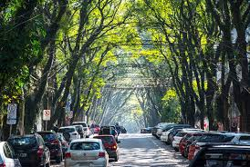
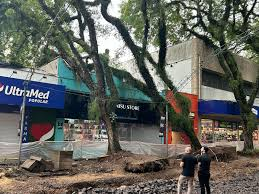
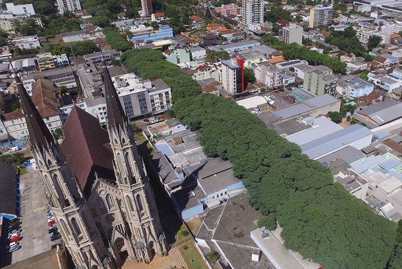
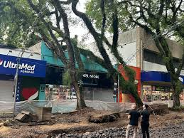
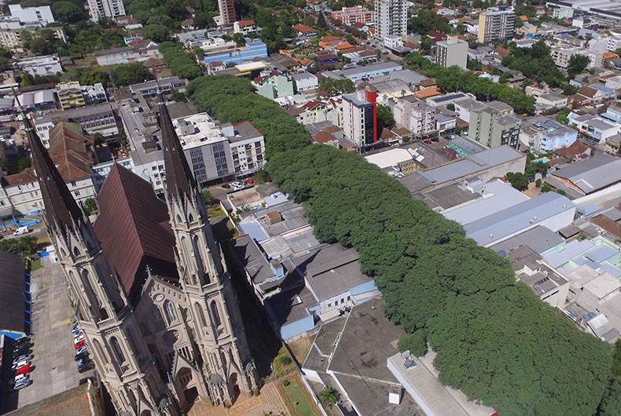
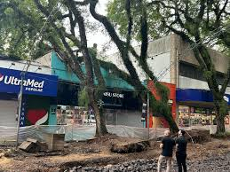
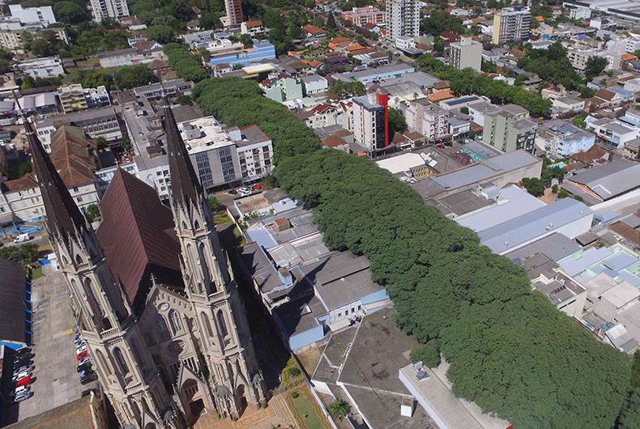
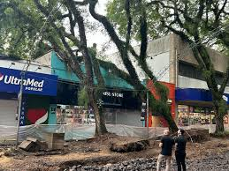
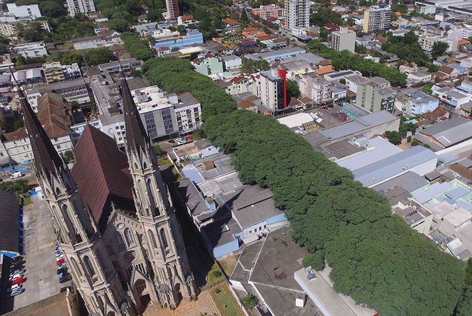

Galeria de Fotos ▼

.jpg)
.jpg)
.jpg) 





Entrevistas de rua sobre essa árvore emblemática da nossa cidade
Tente usar palavras-chave diferentes
Joana Silva, 58 anos, comerciante
"Eu adoro as tipuanas da praça! Quando florescem no verão, é um espetáculo de cores. Mas confesso que às vezes reclamo quando tenho que varrer as folhas caídas na frente da minha loja."
Carlos Mendes, 32 anos, motorista de aplicativo
"As árvores são lindas, mas algumas estão muito grandes e às vezes atrapalham a visão no trânsito, principalmente naquela curva perto do centro. Talvez precisasse de uma poda cuidadosa."
Professora Ana Lúcia, 45 anos
"Uso as tipuanas como exemplo nas minhas aulas de ciências. Elas são perfeitas para explicar sobre ecossistema urbano e a importância das árvores nas cidades. Meus alunos sempre fazem trabalhos sobre elas."
Roberto, 19 anos, estudante universitário
"Sou novo na cidade e fiquei impressionado com essas árvores quando cheguei. Não temos nada parecido onde eu morava. Agora na primavera, quando passo de bike pela avenida principal, parece que estou num túnel amarelo - é incrível!"
Este trabalho apresenta entrevistas realizadas com moradores de Santa Cruz do Sul sobre as tipuanas, parte importante da paisagem urbana. Durante o mês de março, nosso grupo foi às ruas para ouvir o que a população pensa sobre essas árvores.
A tipuana (Tipuana tipu) é uma árvore de grande porte, originária da América do Sul, conhecida por sua copa ampla e floração amarela intensa. Em Santa Cruz do Sul, elas são especialmente presentes no centro da cidade.


Através das entrevistas realizadas, percebemos que as tipuanas são um elemento marcante na paisagem de Santa Cruz do Sul, gerando tanto admiração por sua beleza quanto algumas preocupações relacionadas à manutenção. A maioria dos entrevistados demonstrou apego a essas árvores, que fazem parte da identidade visual da cidade.
Este trabalho nos mostrou a importância de discutir o planejamento urbano e a arborização das cidades, buscando equilibrar beleza, convivência e segurança.